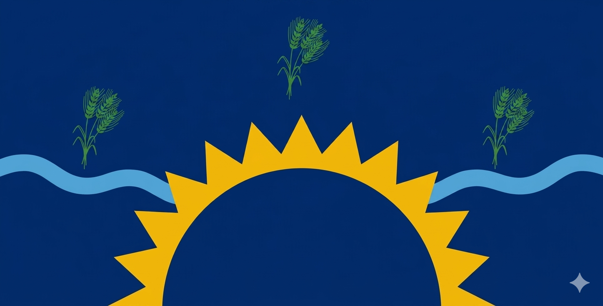
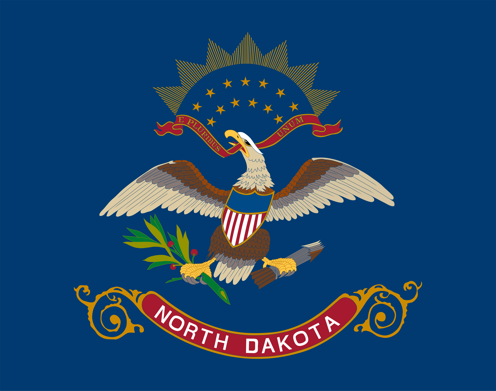
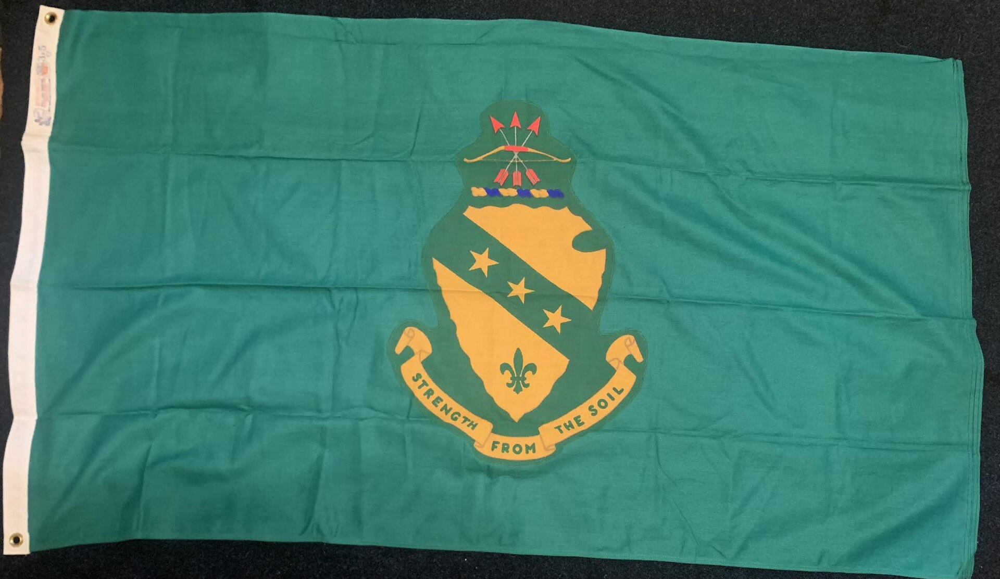
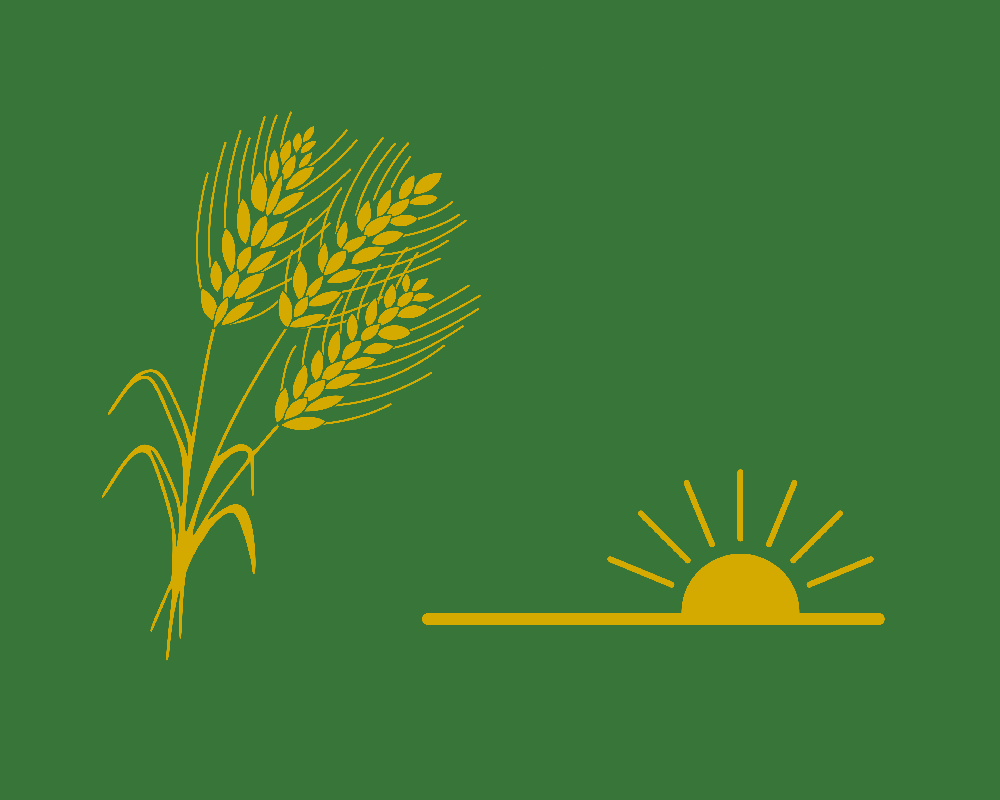
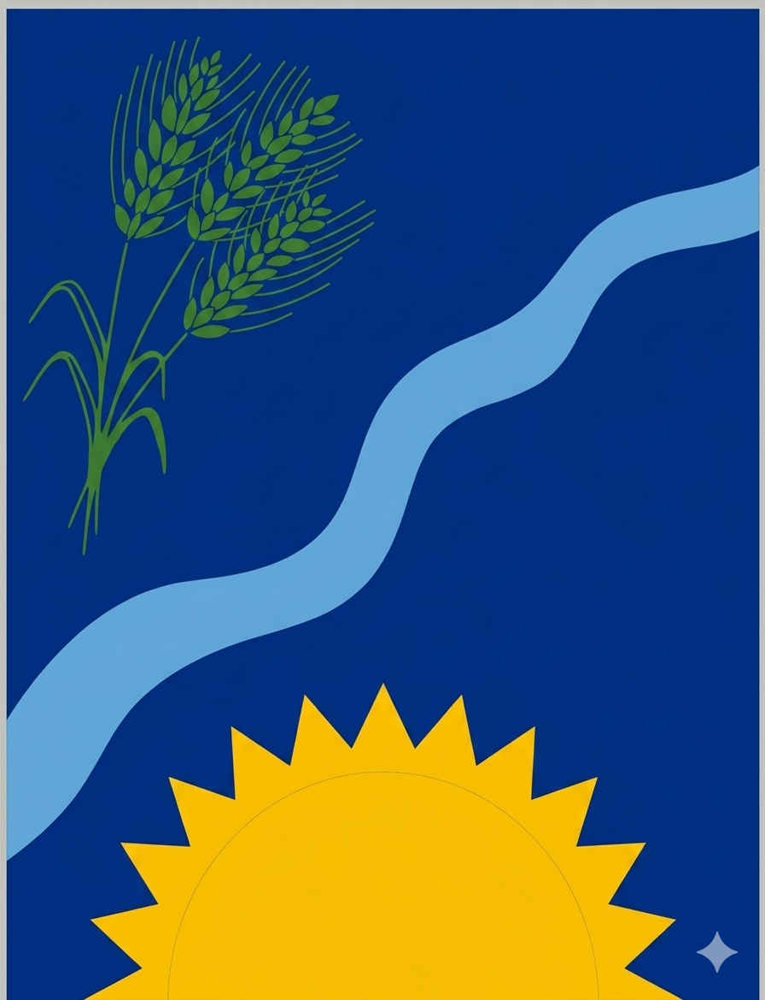
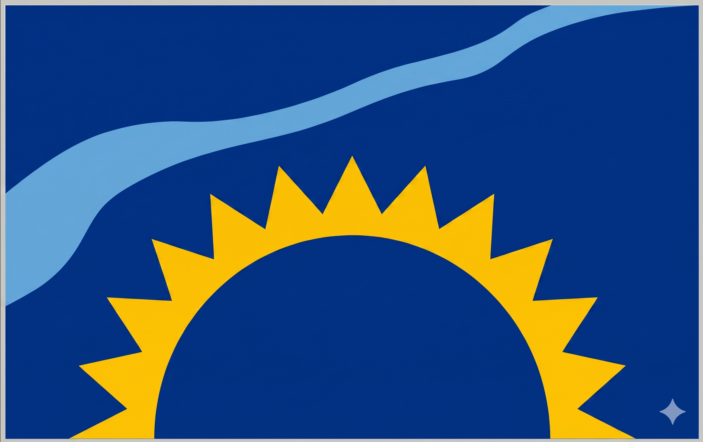
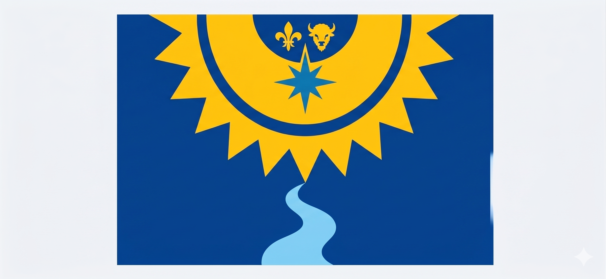
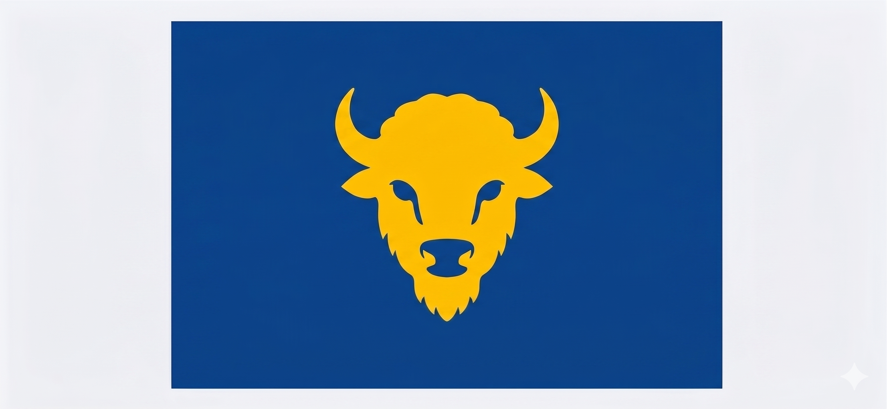
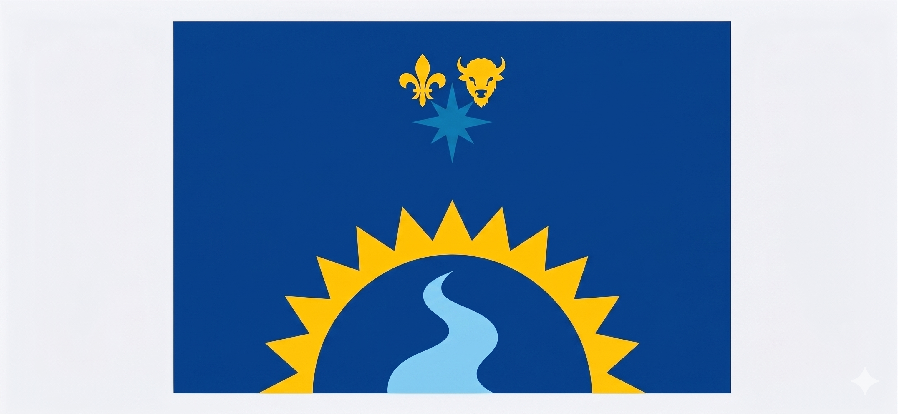
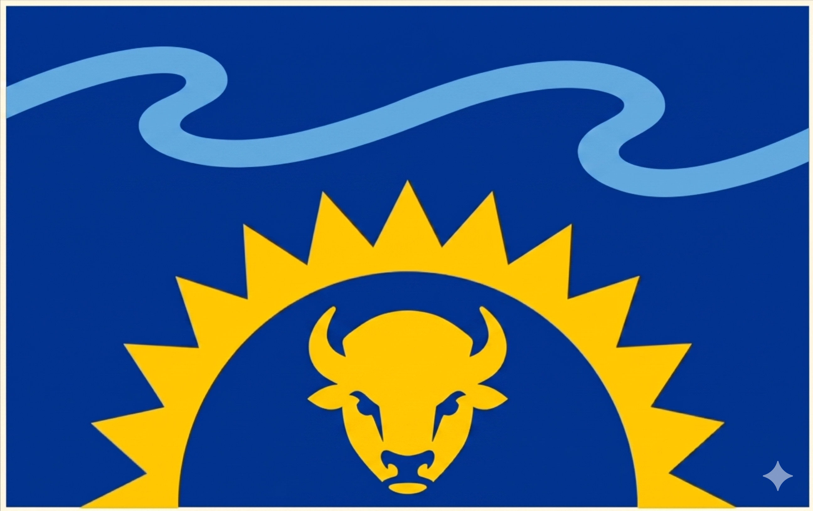

The current state flag
It carries the state's seal language into a flag format, but it asks too much of the eye at any real distance. The detail is there; the readability is not.
Official, but overworked
The state already has a current flag, a governor's flag, older proposals, and a growing field of concept flags. That history gives us permission to ask for a better next step: no words, no seal dropped on a blank field, just a symbol that tells the North Dakota story clearly and confidently.
This page is also part of a bigger national conversation. Around the U.S., states are rethinking their flags to make them simpler, more distinct, and easier to recognize, and CGP Grey's fun critique helped spark a lot of that interest: watch the North Dakota segment.



That is the point. The current state flag is official, the governor's flag shows that North Dakota already understands the power of a distinct ceremonial banner, and the concept flags prove there is room to imagine something clearer, more modern, and more memorable.
It carries the state's seal language into a flag format, but it asks too much of the eye at any real distance. The detail is there; the readability is not.
Even the state has a separate ceremonial banner language. That matters because it shows North Dakota already accepts that different flags can do different jobs.

North Dakota has seen proposals before, which means the idea of improving the flag is not radical. It is part of an ongoing state conversation about how to represent the place well.
This gallery keeps the North Dakota story front and center: the state flag, the governor's flag, the historical proposal, and several modern concept flags that explore what a simpler, wordless, more recognizable symbol could look like.






The page is not asking people to memorize one perfect answer. It is asking them to agree on the direction: North Dakota can have a flag that feels more like a flag, more like the state, and easier to recognize when it matters.
A cleaner flag invites use. When people can draw it, wear it, and share it, the symbol has a better chance of becoming part of daily life.
North Dakota's identity is broad, but a flag should still feel immediate. The best designs capture a place without explaining themselves.
This page encourages support for an updated design process, not one single final answer. The win is a better standard for what the next flag should be.
The state already has enough official detail in its seals, documents, and ceremonial banners. What it needs now is a public flag that is simple, distinctive, and built to carry North Dakota pride into the future.